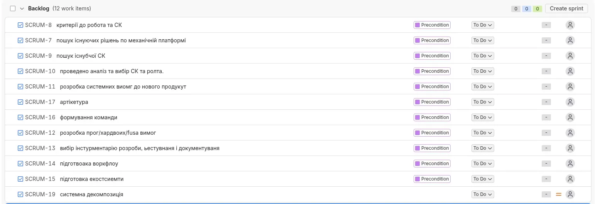
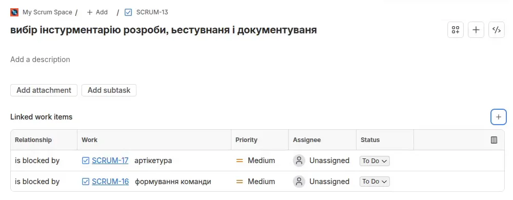
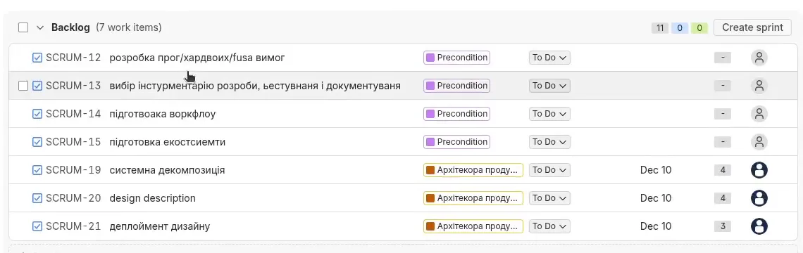

Lehre / Einheit 17 · 17.11.2026
Projektstart in Jira: Precondition, Abhängigkeiten und Sprint-Ziele
PMBOK und der Preis von SAFe, ein Precondition-Backlog für einen Roboter-Manipulator, Blocking-Verknüpfungen und Epics, ein längerer erster Sprint mit Sprint-Ziel, Feiertage und 80 % Kapazität – dazu die Aufgabe zur zweiten Überprüfung.
17.11.2026Einheit 17 / 1700:59:42Praktische Einheit
Kurschronologie
Ingenieurnotizen
PMBOK und der Preis von SAFe, ein Precondition-Backlog für einen Roboter-Manipulator, Blocking-Verknüpfungen und Epics, ein längerer erster Sprint mit Sprint-Ziel, Feiertage und 80 % Kapazität – dazu die Aufgabe zur zweiten Überprüfung.
Abhängigkeiten und Epics
Sprint-Ziel und Kalender
Zweite Überprüfung
Vollständige Unterrichtsnotizen
Vollständige Unterrichtsnotizen
Vollständige deutschsprachige Fachmitschrift auf Grundlage des ukrainischen Transkripts und der Videoaufzeichnung vom 17. November. Die Diagramme stammen von der Redaktion nach den Erklärungen des Dozenten; Namen von Studierenden werden nicht veröffentlicht.
Einheit 17. Projektstart in Jira: Precondition, Abhängigkeiten, Epics, Sprint-Ziel und Kapazität
17. November 2026 · Übung · 1 Std. Erstellt aus dem automatischen Transkript und der Videoaufzeichnung
IgorSikorskyKPI_L12_17112006.mp4: Ticketnamen, Verknüpfungen zwischen Tickets sowie die Sprint- und Epic-Einstellungen, die der Dozent auf dem Bildschirm zeigte, wurden aus dem Video ergänzt. Dies sind redigierte Lehrnotizen, kein wörtliches Protokoll: offensichtliche Erkennungsfehler sind korrigiert, Begriffe an frühere Einheiten angeglichen. Namen von Studierenden werden nicht veröffentlicht; der Kalender des Dozenten, den er als Beispiel zeigte, wird nicht wiedergegeben. Erfahrungen aus Unternehmen sind persönliche Praxis des Dozenten. Redaktionelle Präzisierungen und Diagramme der Redaktion sind gesondert gekennzeichnet. Die Aufgabe zur zweiten Überprüfung steht in Abschnitt 8.
0. Organisatorisches
- Zu Beginn der Einheit herrschte in Kyjiw Luftalarm (gelbe Stufe). Der Dozent bat alle zu bestätigen, dass sie in Sicherheit sind, erinnerte daran, dass die Einheit aufgezeichnet wird und es bei realer Gefahr besser ist, die Aufzeichnung später anzusehen: „Ein guter Ingenieur ist ein lebender Ingenieur.“
- Die Einheit setzt die Einheiten 15 und 16 fort: Dort wurden der Weg einer Aufgabe vom Start bis zum Abschluss (Workflow) beschrieben, Ticket-Typen durchgegangen, ein Scrum-Board für den Kurs gewählt, zwei Sprints angelegt und Kriterien für die Verteilung der Aufgaben vereinbart.
- Am Ende kündigte der Dozent die Aufgabe zur zweiten Überprüfung (Abschnitt 8) und das Thema der nächsten Einheit (Abschnitt 9) an.
1. Woher Best Practices kommen: PMBOK und SAFe
Projektmodelle unterscheiden sich von Unternehmen zu Unternehmen und von Projekt zu Projekt, doch es gibt anerkannte Best Practices.
PMBOK (Project Management Body of Knowledge) ist eine Sammlung von Best Practices für die verschiedenen Arten des Managements in Projekten. Ältere Ausgaben kann man kaufen oder kostenlos herunterladen. In der Ukraine gibt es eine Community, die Schulungen und Zertifizierungen anbietet; ein Zertifikat ist ein gutes Signal, dass man einen Kandidaten als möglichen Projektmanager in Betracht ziehen sollte. Auf dem Bildschirm zeigte der Dozent die Seite der ukrainischen Übersetzung des PMBOK Guide (siebte Ausgabe) auf der Website von PMI Ukraine.
SAFe (Scaled Agile Framework) skaliert Agile für den Fall, dass es viele Teams mit gemeinsamen Abhängigkeiten gibt, die voneinander isoliert arbeiten müssen – und zwar so, dass das Produkt am Ende ausgeliefert wird. Nach Aussage des Dozenten nutzen SAFe unter anderem große Automobilhersteller bei der Entwicklung eines neuen Fahrzeugs: Gibt es viele Teams wie Ihres und baut jedes sein eigenes Stück des Produkts, wählt das Top-Management höchstwahrscheinlich SAFe als Release-Instrument.
Ist das Produkt klein und bauen es ein bis vier Teams, investiert niemand in SAFe: Man wählt Agile (Scrum), Wasserfall, Kanban oder ein anderes einfaches Modell aus dem PMBOK.
| Ansatz | Wann er passt | Preis |
|---|---|---|
| SAFe | Viele Teams, gemeinsame Abhängigkeiten, großes Produkt (z. B. ein Auto) | Viele Routinen: Kommunikation zwischen Ingenieuren, Planung, Risikoanalyse, Backlog Refinement, Demos, Plannings, Meetings, Abstimmungen |
| Scrum / Agile | Ein Produkt, ein oder wenige Teams | Deutlich weniger Routinen als SAFe |
| Wasserfall, Kanban | Gut verstandene Aufgaben, kleiner Maßstab | Die wenigsten Routinen |
Was dieser Preis kauft. Sie zahlen damit, dass jeder Ingenieur einen Teil seiner Zeit in Zusammenarbeit investiert. Dafür löst SAFe Integration, Test, Qualitätskontrolle, Zertifizierung und den Ersatz eines Ingenieurs, der früher oder später kündigen will, auf Systemebene. Für das Projekt sind das keine „Schocknachrichten“, sondern gewöhnliche Routine. Allgemeinere Ansätze verdauen solche Situationen deutlich schwerer.
Wann SAFe nicht nötig ist. Ein interdisziplinäres Team (Hardware, Mechanik, Firmware, Desktop, Designer) baut das Produkt, und es passt in ein oder zwei Inkremente – etwa bis zu einem halben Jahr, höchstens ein Jahr. Dann ergibt es höchstwahrscheinlich keinen Sinn, die Zeit des Teams in SAFe-Routinen zu investieren. Die Entscheidung muss bewusst getroffen werden.
Eine Ausnahme aus der Praxis des Dozenten. Er hat die Schulungen absolviert und die Zertifikate gehalten, auch für SAFe. In Unternehmen, in denen er arbeitete, wurden Teams auf internen Pet-Projekten vorbereitet und nutzten SAFe bewusst „im Übermaß“. Als ein großer Kunde kam, der nach SAFe arbeitet, war es leicht, sich mit dessen Teams zu integrieren und gemeinsam zu arbeiten.
Redaktionelle Präzisierung. Die aktuelle Ausgabe ist der PMBOK® Guide — Eighth Edition (PMI, November 2025). Eine ukrainische Übersetzung der siebten Ausgabe (2021) ist auf der Website des PMI Ukraine Chapter frei verfügbar. Die verbreitetste Zertifizierung auf Basis des PMBOK ist der PMP (Project Management Professional). In SAFe dauert ein Inkrement (PI, in SAFe 6 Planning Interval) meist 8–12 Wochen; „bis zu einem halben Jahr“ entspricht also etwa zwei bis drei PIs. Die Aussage über bestimmte Automobilhersteller gibt die Erfahrung des Dozenten wieder; eine öffentliche Bestätigung hat die Redaktion nicht geprüft.
2. Precondition: was vor dem Projektstart zu tun ist
Bevor die Arbeit in Sprints geschnitten wird, kommt alles, was das Projekt leisten muss, in den Backlog. Das Beispiel ist der bekannte Roboter-Manipulator. Der Dozent legte die Tickets nacheinander an und präzisierte dann die Reihenfolge; unten die endgültige Reihenfolge (Ticketschlüssel wie auf dem Bildschirm, SS = Steuerungssystem):
| Schlüssel | Aufgabe | Erklärung des Dozenten |
|---|---|---|
| SCRUM-7 | Suche nach bestehenden Lösungen für die mechanische Plattform | Verstehen, welche Roboter es auf dem Markt gibt |
| SCRUM-8 | Kriterien für Roboter und SS | Eine Suche ohne Kriterien ist sinnlos; höhere Priorität als die Suche nach dem Roboter selbst |
| SCRUM-9 | Suche nach einem bestehenden SS | Die Kriterien liegen vor – einfach suchen |
| SCRUM-10 | Analyse und Auswahl von SS und Roboter | Eine Vergleichstabelle in Excel: was wählen |
| SCRUM-11 | Systemanforderungen an das neue Produkt | High-Level-Anforderungen an das Roboter-SS, Sensorik, Aktoren, Kommunikation, HMI und den Cloud-Teil |
| SCRUM-17 | Architektur | Direkt nach den Systemanforderungen – vor Software-Anforderungen, Workflow und Werkzeugen; sie legt die nötigen Rollen fest |
| SCRUM-16 | Teambildung | Rollen ergeben Personallisten; dann Einstellung |
| SCRUM-12 | Software-, Hardware- und Funktionale-Sicherheits-Anforderungen (FuSa) | Zerlegung der Systemanforderungen |
| SCRUM-13 | Auswahl der Werkzeuge für Entwicklung, Test und Dokumentation | Welche Werkzeuge wir verwenden |
| SCRUM-14 | Vorbereitung des Workflows | Wie Aufgaben auf Ingenieure verteilt und in Arbeit genommen werden, wer reviewt, wo Zeit erfasst und wohin Ergebnisse gepusht werden – Dokumentation der Arbeitsprozesse, damit das ganze Team gleich arbeitet |
| SCRUM-15 | Vorbereitung des Ökosystems | GitHub oder GitLab einrichten und mit Jira integrieren, Confluence vorbereiten, Werkzeuge auf einem Server oder lokal bei jedem Entwickler installieren, Zugänge vergeben, Konformität mit Anforderungen an Cybersecurity und funktionale Sicherheit sicherstellen |
Die entstandene Kette: Marktanaloga → Kriterien → Anforderungen → Zerlegung der Anforderungen → Architektur → Team → Werkzeuge → Entwicklungs- und Testansatz → Ökosystem. Das Ökosystem lässt sich nicht vorbereiten, bevor die Leute eingestellt sind.
Auch die Teambildung ist ein Ticket im selben Jira. Das ist übliche Praxis: Ein Projekt kennt keine Rolle „Chef“; es gibt Manager, Architekt, Lead, Techniker, Monteur, Entwickler, Tester. Aber alle sollten verstehen, was getan wurde, warum so, in welcher Reihenfolge, welche Abhängigkeiten es gibt und warum eine bestimmte Person genommen wurde.
Diese ganze Menge an Aufgaben ist nichts anderes als das Schaffen der Voraussetzungen (Precondition): was erledigt sein muss, bevor die eigentliche Projektarbeit beginnt.


3. Abhängigkeiten zwischen Tickets
Wie sagt man Jira, dass eine Aufgabe nicht starten kann, bevor eine andere geschlossen ist? Das Feld Parent und Subtasks gibt es, ein eigenes Feld „Dependency“ fand der Dozent in diesem Space jedoch nicht. Die Lösung: im Ticket auf „+“ → Link work item klicken und den Verknüpfungstyp is blocked by wählen.


Die Verknüpfungen, die der Dozent in der Einheit gesetzt hat:
| Ticket | Blockiert durch (is blocked by) | Logik |
|---|---|---|
| SCRUM-16 Teambildung | SCRUM-17 Architektur | Die Architektur legt die Rollen fest |
| SCRUM-13 Werkzeugauswahl | SCRUM-16, SCRUM-17 | Ohne Architektur und Team keine Werkzeugwahl |
| SCRUM-14 Vorbereitung des Workflows | SCRUM-16, SCRUM-17, SCRUM-12 | Der Workflow hängt von Leuten, Architektur und Anforderungen ab |
| SCRUM-15 Vorbereitung des Ökosystems | SCRUM-13 | Eine Verknüpfung genügt – siehe unten |
Vererbte Abhängigkeiten. Mit wachsendem Plan sammeln sich Abhängigkeiten an. Man muss nicht bei jedem Ticket alle blockierenden Aufgaben eintragen: Eine Kette genügt. Die Architektur blockiert die Anforderungen, die Anforderungen blockieren die Werkzeugauswahl, und die Werkzeugauswahl blockiert Workflow und Ökosystem. Deshalb wurde das Ökosystem (SCRUM-15) nur mit der Werkzeugauswahl (SCRUM-13) verknüpft.
Der Dozent wollte zeigen, wie Jira daraus eine Roadmap in der Zeit baut, doch der Dienst bot ein kostenpflichtiges Abonnement an.

Redaktionelle Präzisierung. Blocks / is blocked by ist ein Standard-Verknüpfungstyp in Jira. Die eingebaute Zeitleiste (Timeline) eines Space zeigt Abhängigkeiten nur für Verknüpfungen vom Typ Blocks und nur innerhalb eines Space; projektübergreifende Planung (Plans) gibt es in den Tarifen Premium und Enterprise. Beachten Sie: In der Standardkonfiguration verhindert eine Verknüpfung allein nicht, dass eine blockierte Aufgabe in Arbeit genommen wird – das ist eine Teamvereinbarung; eine technische Sperre erfordert Workflow-Bedingungen oder Automatisierungsregeln. Auch „entfaltet“ Jira eine Abhängigkeitskette nicht automatisch: Ein Mensch liest sie, deshalb sollten Verknüpfungen auf den nächsten Blocker zeigen, wie es der Dozent gezeigt hat.
4. Epics: Precondition und Produktarchitektur
Eine Aufgabe in ein Epic umwandeln. Der Dozent legte eine Aufgabe „Precondition“ (SCRUM-18) an und änderte ihren Typ in Epic, statt sie zu löschen und neu anzulegen. Die Logik: Wenn Sie schon zwei Tage in die Einrichtung eines Tickets gesteckt haben, ist Umwandeln einfacher. Dann markierte er alle Voraussetzungsaufgaben, wählte Edit fields (Massenbearbeitung) und setzte Parent = Precondition → Confirm. Nun haben sie eine gemeinsame Eigenschaft: Sie gehören zum Epic Precondition.
Die ersten Aufgaben nach der Vorbereitung. Ist die Architektur beschrieben, wird sie zuerst in Teile zerlegt:
| Schlüssel | Aufgabe | Bedeutung |
|---|---|---|
| SCRUM-19 | Systemzerlegung | Aus dem High-Level-Diagramm konkrete Teile machen, die einzelne Ingenieure umsetzen |
| SCRUM-20 | Design description | Was in jedem Teil passiert: Algorithmus, Anforderungen, vor allem die Schnittstellen, und wie am Ende alles zusammengebaut wird |
| SCRUM-21 | Design-Deployment | Das Design auf Platzhalter verteilen, damit Ingenieure parallel arbeiten können, jeder in seiner „Sandbox“ |
Für sie wurde ein zweites Epic angelegt – „Produktarchitektur und Zerlegung“ (SCRUM-22) – und ebenso per Massenbearbeitung als Parent gesetzt. Die Aufgaben erhielten den Termin 10. Dezember („es brennt“) und die höchste Priorität (Highest).
Eine Abhängigkeit auf Epic-Ebene. Im Epic SCRUM-22 selbst setzte der Dozent: is blocked by SCRUM-18 Precondition. Stellen Sie sich zwei Eltern vor – Precondition und Architektur. Der Prozess muss die Teamleads dazu bringen, zuerst Precondition und erst dann die Architektur zu nehmen. Das Architektur-Epic mit Deadline lässt sich nicht schließen, solange das Voraussetzungs-Epic offen ist.

Schätzungen und Zuweisung. Wie Aufgaben geschätzt werden, wurde in Einheit 16 behandelt (Story-Point-Abstimmung); hier erinnerte der Dozent nur daran, wie sie eingetragen werden: 4, 4 und 3 SP für die Aufgaben des Architektur-Epics, und wies sie Personen im Team zu.


Das Modell steht nun, liegt aber noch im Backlog. Als Nächstes werden auf dem Scrum-Board einige Aufgaben in den ersten Sprint genommen, einige in den zweiten und so weiter.
5. Sprints: Dauer und Ziel
Sprints lassen sich bearbeiten (Menü „…“ → Edit sprint).
Dauer. Standard sind zwei Wochen; das Enddatum wird automatisch aus dem Startdatum berechnet. Die Dauer muss aber nicht einmal innerhalb eines Projekts gleich sein. Der Dozent machte den ersten Sprint drei Wochen lang (auf dem Bildschirm 2.–23. November), die übrigen je zwei Wochen. Das ist eine bewusste Managemententscheidung: Die erste Woche wird durch unvorhersehbare Abhängigkeiten stark verzögert – selbst mit sehr guten Ingenieuren „fangen die Überraschungen an“, und ohne Reserve scheitert der Sprint.

Das Sprint-Ziel (Sprint Goal) ist das, was im Sprint erreicht werden soll, knapp in einem Satz formuliert. Es muss erreichbar und beobachtbar sein: Man muss klar sagen können, ob es erreicht wurde oder nicht. Das Ziel des ersten Sprints: „Analoga von Robotern und Steuerungssystemen ermittelt“ – im Sprint liegen genau die Kriterien, die Suche nach bestehenden Lösungen und die Analyse.

Ein Sprint ist etwas „Gespieltes“, Künstliches, aber alle spielen das Spiel mit. Und das größte Unglück in diesem Spiel ist, das Sprint-Ziel zu verfehlen: Es bedeutet, dass das Team irgendwo falsch lag und überlegen muss, was es als Nächstes tut, um dieselben Fehler nicht zu wiederholen.
Redaktionelle Präzisierung. Laut Scrum Guide (2020) haben Sprints eine feste Länge von höchstens einem Monat – das schafft Rhythmus und vergleichbare Daten zur Velocity des Teams. Ein längerer erster Sprint ist ein bewusster praktischer Kompromiss des Dozenten; wer ihn nutzt, sollte beachten, dass die Velocity des ersten Sprints nicht direkt mit späteren vergleichbar ist. Im Scrum Guide ist das Sprint Goal das einzige Ziel des Sprints, das das Team im Sprint Planning formuliert; es lässt Flexibilität bei der konkreten Arbeit.
6. Wie der Plan und die Sprint-Ziele entstehen
Der Dozent beschrieb, wie das in der Praxis aussieht:
- Schneiden. Das ganze Team kommt zusammen und schneidet die Arbeit in Aufgaben im Backlog – hundert, zweihundert, dreihundert, vierhundert Tasks.
- „Kämmen“. Die erfahrensten Leute, „denen das alles wehtut“, setzen Termine (die Schätzungen stimmt das Team ab), Parents, Abhängigkeiten und eine Beschreibung für jede Aufgabe.
- Prioritäten. Leads, der Architekt und der Product Owner – derjenige, der die Kriterien des Produkts am Ausgang festlegt und weiß, was er am Ende haben will – vergeben Prioritäten: höchste, hohe, mittlere, niedrige, niedrigste.
- Entwirren. Priorität ist nicht alles: Man muss auf die Abhängigkeiten schauen. Die Architektur hat die höchste Priorität, kann aber nicht in den ersten Sprint – es gibt noch keine Kriterien und Anforderungen, „der Systemansatz ist noch sehr roh“. Also nehmen wir die Aufgaben, von denen sie abhängt, und erledigen sie so schnell wie möglich; das gibt die hochpriore Aufgabe frei, und diese wiederum einen ganzen Busch weiterer. Die Metapher des Dozenten: Haare kämmen – die verfilzteste Stelle suchen, sie entwirren, zur nächsten gehen, „bis alle Kletten aus dem Haar sind“.
- Sprints füllen. Nach diesem Kriterium verteilen sich die Aufgaben auf Sprints. Ziel ist, dass zum Zeitpunkt der Planung nichts im Backlog übrig bleibt. Die Zahl der benötigten Sprints ist die Projektdauer: Man sieht das Enddatum.
- Puffer und Kalender. Dann kommt ein Puffer hinzu, und man öffnet den Kalender: wer wann arbeitet, welche Feiertage. Beispiel: Ein schwedischer Kunde hat eigene Feiertage (Mittsommer und andere), dazu globale: Neujahr, Weihnachten. Ein Sprint kann zwei Wochen dauern, doch von seinen 10 Arbeitstagen sind nur 4 real – die Sprint-Kapazität beträgt 4 Tage, nicht 10, weil auf diesen Sprint für das ganze Team Feiertage fallen.
- Ein Ziel für jeden Sprint und der Start.

Investieren Sie Zeit in die Planung. Je sorgfältiger Sie sie durchgehen, desto weniger Probleme. Sonst entsteht ein schönes Jira, das nicht funktioniert, weil Sie „übersehen“ haben, dass in dieser Zeit niemand arbeitet.
SAFe betont ausdrücklich: Einmal in drei Monaten kommen alle an einem Ort zusammen und schauen, was erledigt ist und was nicht, was verschoben, was ganz aus dem Scope gestrichen, was in den Backlog aufgenommen und wie priorisiert wird; sie halten eine Retrospektive – was lief schief, was ändern, stoppen oder beginnen. Ziel ist, dass das Produkt weiterhin pünktlich, in Qualität und ohne übermäßigen Stress ausgeliefert wird.
Berücksichtigt die Planung die reale Sprint-Kapazität, das reale Ziel, die realen Abhängigkeiten und die realen Fähigkeiten des Teams, können Team, Leads und Kunde komfortabel arbeiten. Und wenn Menschen sich wohlfühlen, können sie so lange wie nötig arbeiten und ebenso lange den Wert des Produkts steigern. Alle sind zufrieden – das ist gutes Geschäft. Die Schweden nennen diese Harmonie lagom.
Redaktionelle Präzisierung. In SAFe ist das das PI Planning: meist zwei Tage, zu Beginn jedes Inkrements, also alle 8–12 Wochen – „einmal im Quartal“ entspricht der Obergrenze. Mittsommer wird in Schweden Ende Juni gefeiert (Midsommarafton ist der Freitag zwischen dem 19. und 25. Juni). Lagom ist schwedisch für „genau richtig“, weder zu viel noch zu wenig.
7. 80 % Kapazität: wie man es dem Kunden erklärt
Erinnerung aus Einheit 16: Ein Sprint wird zu etwa 80 % der Kapazität gefüllt. Hier entsteht ein Konflikt. Der Kunde zahlt Geld – und Ingenieure werden nicht gerade wenig bezahlt. Architekten, PO und PM sagen: „Wir haben einen Sprint mit 10 Story Points berechnet, wir planen nur 8.“ Der Kunde ist empört: „Ich bezahle Sie doch für 10!“
Die Argumente des Dozenten:
- Routinen – Kommunikation zwischen Kunde und Auftragnehmer, Sprint Planning, Sprint Demo, Retrospektiven, Backlog Refinement, Calls. Man wird sie nicht los, „solange es Menschen gibt“, aber sie kosten Zeit – viel Zeit. Der Dozent zeigte seinen Arbeitskalender der Vorwoche: der größte Teil Calls und Prozessabstimmung, nur kleine Fenster für Offline-Arbeit. Seine Rolle ist speziell, Ingenieure haben weniger davon, aber Zeit kostet es trotzdem.
- Kontextwechsel. Iwan programmiert, denkt über seine Aufgabe nach – und dann ein Anruf: „Erzähl mal, wie ihr diese Schnittstelle umgesetzt habt?“ Er muss sich lösen, kommunizieren, zurückkehren – und auch das Zurückkehren kostet Zeit.
- Ungeplantes. Vieles wird geplant, aber nicht alles landet im Plan.
Daher 80 %. Lassen Sie sich nicht provozieren mit „machen wir 100 %, wir haben schon bezahlt“: Erklären Sie wörtlich, dass das Zeit für Kommunikation, Kontextwechsel und Ungeplantes ist.
Sprint-Start. Wenn alles geplant ist, drückt man Start sprint. Jira fragt noch einmal nach, ob alle bereit sind. In großartigen Projekten ist das wie ein Raketenstart: Alle stehen zusammen und halten den Atem an; manchmal ruft jemand im letzten Moment „Stopp!“ – etwas wurde vergessen. Es wird ergänzt, und wieder: „Drei, zwei, eins, Start.“ Ab diesem Moment läuft der Countdown: Es gibt ein Arbeitspaket, das erledigt werden muss, sonst „verbrennen“ Sie das Sprint-Ziel und lassen Ihr Team, Ihren Lead und sich selbst im Stich.
8. Zweite Überprüfung: die individuelle Aufgabe
Am Ende der Einheit kündigte der Dozent an, dass die zweite Überprüfung beginnt, und erklärte, was er für eine erfolgreiche Abgabe erwartet. Auf die Frage eines Studierenden bestätigte er: Es ist eine individuelle Arbeit. Auf die Bitte, die Aufgabe im Gruppenchat zu wiederholen, antwortete er, dass er die Aufzeichnung durch Whisper laufen lässt und die Aufgabe als Liste erhält – hier ist sie.
Was vorzubereiten ist:
| Nr. | Etappe | Was zu tun ist | Wo im Kurs |
|---|---|---|---|
| 1 | Unternehmen | Name, Ziel, Branche, Set-up (Zusammensetzung und Struktur), Standort, Budget des Unternehmens | 01, 07 |
| 2 | Website | Darauf aufbauend – mit einem beliebigen KI-Werkzeug – eine einseitige Website (One-Pager) des Unternehmens; auf kostenlosem Hosting veröffentlichen, damit sie im Web erscheint | 07, 08 |
| 3 | Präsentation | Eine Präsentation über das Unternehmen im selben Designstil | 07, 10 |
| 4 | Poster und Karten | Ein Poster, mit dem Sie angeblich zu einer Konferenz fahren, und Visitenkarten | 07, 08 |
| 5 | Konferenz | Eine reale Konferenz, die 2027 stattfindet, finden und zeigen, dass Sie hinfahren: mit den Veranstaltern vereinbart, Teilnahme bezahlt usw. (simuliert) | 03, 09 |
| 6 | Reise | Simulation der Reisevorbereitung und der Kommunikation mit der Reiseabteilung; die Reise selbst | 09, 10 |
| 7 | Kundentreffen | Simulation eines Treffens mit einem Kunden und einer Diskussion mit ihm | 09, 10, 11 |
| 8 | Follow-up | Erstes Follow-up, zweites Follow-up, Gewinnung als Kunde, weitere Kommunikation | 04, 10, 11, 12 |
| 9 | Proposal und Architektur | Erstellung des Proposals und der Architecture Description | 05, 06, 08, 12–14 |
| 10 | Aufgaben | Zerlegung der Architecture Description in Aufgaben in Trello, Jira oder GitHub Projects | 15, 16, 17 |
Die Spalte „Wo im Kurs“ hat die Redaktion ergänzt: die Nummern der Einheiten, in denen das Thema ausführlicher behandelt wird.
Abgabeformat:
- Eine Bildschirmaufnahme mit Sprechkommentar: Sie schlüpfen in die Rollen und sprechen buchstäblich durch, wie alles abläuft.
- Ein Video pro Studierendem mit allen oben genannten Etappen.
- Gesamtlänge höchstens 15 Minuten. Bereiten Sie sich gründlich vor und zeigen Sie dann die Artefakte.
- Worauf Sie Zeit und Aufwand konzentrieren, entscheiden Sie. Das ist eigentlich Teil Ihrer Vertriebsstrategie.
Frist: Die Bewertungsliste wird am 30. November geschlossen; der Dozent braucht Zeit zur Prüfung, daher ist die Arbeit bis zum 27. November 2026 abzugeben.
„Wenn Sie das machen, werde ich unglaublich glücklich sein. Für mich bedeutet das, dass all das nicht umsonst ist.“

Redaktionelle Präzisierung: Bezug zu Einheit 15. Am 10. November wurde die zweite Überprüfung als Teamprojekt beschrieben (Architecture Description, Proposal, Gantt-Diagramm, Einbindung der Ingenieure und Kosten, Preismodelle, ein Tracker-Space mit Backlog für mindestens vier Sprints), der Weg „Unternehmen → Konferenz → Kunde → Proposal“ dagegen als große individuelle Berechnungs- und Entwurfsarbeit nach der zweiten Überprüfung. Am 17. November kündigte der Dozent genau diese individuelle Liste als Aufgabe zur zweiten Überprüfung an. Diese Notizen halten beide Ankündigungen so fest, wie sie gemacht wurden; die jüngste ist die vom 17. November. Ist etwas an den Anforderungen unklar, fragen Sie beim Dozenten nach.
Checkliste vor der Abgabe (von der Redaktion, auf Basis der Anforderungen des Dozenten):
- Die Website öffnet sich über einen öffentlichen Link von einem anderen Gerät.
- Website, Präsentation, Poster und Karten haben einen Stil und dieselben Kontaktdaten.
- Die Konferenz ist real und findet 2027 statt; das Video enthält einen Link dazu.
- Das Video deckt alle Etappen 1–10 ab, manche auch nur kurz.
- Die Aufgaben im Tracker stammen aus Ihrer Architecture Description und sind nicht separat geschrieben.
- Die Gesamtlänge des Videos beträgt höchstens 15 Minuten; es ist bis zum 27. November abgegeben.
9. Ankündigungen und die nächste Einheit
- Der Dozent wollte über den Prozess der Einstellung von Ingenieuren und anderen Fachleuten in ein Projekt sprechen – wie er abläuft und worauf man achtet. Das Thema wurde auf die nächste Einheit (in einer Woche) oder eine Offline-Aufzeichnung verschoben.
- Die Vorbereitung auf die Dienstreise des Dozenten hat begonnen. Wie immer gibt es Nuancen: Etwas passt nicht, jemand hat etwas übersehen, die Reiseabteilung macht „nicht ganz das Richtige“. Der Dozent nimmt kurze Videos dieser Vorbereitung auf; nach der Rückkehr will er sie aufbereiten und als Seminarmodul veröffentlichen: Reisevorbereitung, Reise, Probleme, wie sie gelöst wurden und wie alles endete.
- Nächste Einheit: Vorbereitung der internen Prozesse des Unternehmens für die Einstellung von Ingenieuren – verschiedene Arten von Ingenieuren, verschiedene Arten der Einbindung.
Praktische Erkenntnisse
- PMBOK ist eine Sammlung von Best Practices des Projektmanagements; SAFe ist für viele Teams mit gemeinsamen Abhängigkeiten, sein Preis ist jedoch ein Anteil der Zeit jedes Ingenieurs für Routinen.
- Vor dem Projektstart enthält der Backlog die Precondition: Analoga, Kriterien, Anforderungen, Architektur, Team, Werkzeuge, Workflow, Ökosystem.
- Die Architektur folgt direkt auf die Systemanforderungen und legt die Rollen fest; ohne Leute lässt sich das Ökosystem nicht vorbereiten.
- Abhängigkeiten in Jira sind Verknüpfungen is blocked by; eine Kette bis zum nächsten Blocker genügt.
- Eine bestehende Aufgabe lässt sich in ein Epic umwandeln; den Parent vieler Aufgaben ändert man per Massenbearbeitung.
- Abhängigkeiten lassen sich auch zwischen Epics setzen – so wird die Reihenfolge großer Arbeitsblöcke festgelegt.
- Der erste Sprint darf länger sein; das Sprint-Ziel ist ein erreichbarer, überprüfbarer Satz.
- Der Plan wird aus Abhängigkeiten gebaut, nicht nur aus Prioritäten; die Zahl der Sprints ergibt das Enddatum.
- Feiertage von Team und Kunde verringern die reale Sprint-Kapazität – prüfen Sie den Kalender.
- 80 % Kapazität sind Zeit für Routinen, Kontextwechsel und Ungeplantes; das muss man dem Kunden erklären können.
Fragen zur Selbstkontrolle
- Was ist das PMBOK, und wozu braucht ein Manager ein Zertifikat?
- Wann ist SAFe gerechtfertigt, und wann zahlen sich seine Routinen nicht aus?
- Was gehört zur Precondition des Roboter-Manipulator-Projekts, und warum in dieser Reihenfolge?
- Warum wird die Architektur vor Teambildung und Werkzeugauswahl erstellt?
- Wie setzt man in Jira eine Abhängigkeit zwischen Tickets, und was sind vererbte Abhängigkeiten?
- Warum eine Aufgabe in ein Epic umwandeln, statt das Epic neu anzulegen?
- Wie und warum setzt man eine Abhängigkeit zwischen Epics?
- Warum darf der erste Sprint länger sein als die folgenden?
- Wie sollte ein Sprint-Ziel aussehen? Nennen Sie ein Beispiel für den ersten Sprint.
- Wie erhält man aus dem Backlog das Enddatum des Projekts?
- Wie beeinflussen die Feiertage des Kunden die Sprint-Kapazität?
- Welche Argumente für 80 % Kapazität kann man dem Kunden nennen?
- Welche Etappen muss das Video zur zweiten Überprüfung abdecken, wie lang darf es höchstens sein, und was ist die Frist?
Wie es weitergeht
Vom Dozenten angekündigt: Die nächste Einheit (etwa eine Woche später) behandelt die internen Prozesse des Unternehmens für die Einstellung von Ingenieuren, verschiedene Arten von Ingenieuren und verschiedene Arten der Einbindung. Prognose der Redaktion, keine Ankündigung: wahrscheinliche Themen sind aus der Architektur abgeleitete Rollenprofile, Stellenausschreibungen und Vorstellungsgespräche, Einbindungsmodelle (Festanstellung, Outstaffing, Auftragnehmer) und Onboarding – also das Ausfüllen der Aufgabe „Teambildung“ (SCRUM-16).
Geprüfte Links
- PMI, PMBOK® Guide — Eighth Edition: https://www.pmi.org/pmbok-guide
- PMI Ukraine Chapter, PMBOK Guide (siebte Ausgabe, ukrainische Übersetzung): https://pmiukraine.org/pmbok7
- SAFe, PI Planning: https://framework.scaledagile.com/pi-planning/
- The Scrum Guide (2020): https://scrumguides.org/scrum-guide.html
- Atlassian, Abhängigkeiten auf der Jira-Zeitleiste: https://support.atlassian.com/jira-software-cloud/docs/show-or-hide-dependencies-on-your-roadmap/